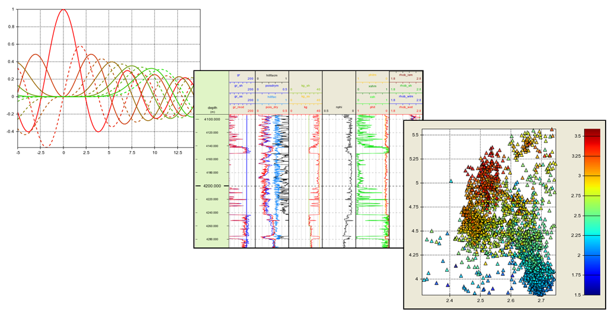
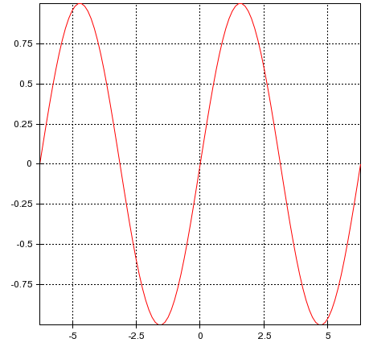

Data Exploration with Chaco

Structure of today's tutorial
- Overview of Chaco
- Basic plots and interactors
- Creating simple interactors
- Core concepts: data model, layout, interaction model
- More complex plots
- Walkthrough of some examples
Overview
Chaco is a plot application toolkit for Python. You use it to build
stand-alone plotting applications, or embed it inside any application that needs
to visualize numerical data.
Sample plotting applications:
- batch plotting of data (csv -> png)
- display for realtime data acquisition
- visual plot construction kit
- visual editor for tweaking input parameters to simulations
- mapping and GIS applications
Chaco Features
- Different rendering layers, backbuffering
- Container model for layout and event dispatch
- Modular and extensible architecture
- Data model/filtering pipeline
- Vector drawing engine
A first look
tutorial1.py

Creating a window
Opening the window
Normal python (standalone app)
From within IPython
Fun from within IPython
We can tweak plot attributes on the fly:
Fun from within IPython
We can even write functions to do the tweaking for us!
The Joy of Traits
Since all Chaco primitives use traits, we can easily bring up property sheets.
Adding a basic interactor
All Chaco components can have tools on them, and any events they receive get forwarded on to
their tools.
Adding zoom
Because the zoom tool draws a visible "zoom box", we need to add it to the list
of overlays instead of the list of tools. (It will still get events.)
Coordinating different tools
PanTool and SimpleZoom both key off the left mouse click/drag. Fortunately,
PanTool is not a "stateful" interaction, and there is a way to tell SimpleZoom
to play nicely with others:
Writing our first interactor
Diagnostic tool to dump out the events we are getting:
Looking at data
We don't really want to know the mouse position; we want to know about
coordinates in data space:
Digging deeper
What does the create_line_plot() actually do?
- creates datasources
- creates range objects and mappers
- creates the plot object
Datasources
ArrayDataSource is just a subclass of AbstractDataSource which works with
Numeric/numpy arrays.
Ranges, Mappers, and the Plot
Two plots
We can use a container to put two plots on the screen.
Connecting the two plots
We're going to link the X dimension of the two plots. Really, all we have to do to
achieve this is to set the horizontal range on the two plots to be the same.
Connecting the two plots (cont.)
We can connect the Y dimension, too. And let's throw in a zoom tool.
Linked views, but not connected data
Adding a line inspector will show the problem.
Connecting the data
Why Index-Value instead of X-Y?
Because you are then immune to a plot's physical layout.
Examples
Visual Components
- Renderers
- Containers
- Tools and tool overlays
- Legends, annotations, etc.
Visual Components (cont.)
- have bounds, position, padding, border, bgcolor
- can be placed inside containers
- can be horizontally and vertically resized (or not)
- implement draw (and request draw on their underlays and overlays)
- implement dispatch (and dispatch to underlays and overlays)
More about Containers
- Layout
- Dispatch
- Draw order & backbuffering
Walkthrough of interesting examples
How to get it
http://code.enthought.com/chaco
Mailing lists: scipy-chaco@scipy.org, enthought-dev@enthought.com
Get Enthon! http://code.enthought.com/enthon